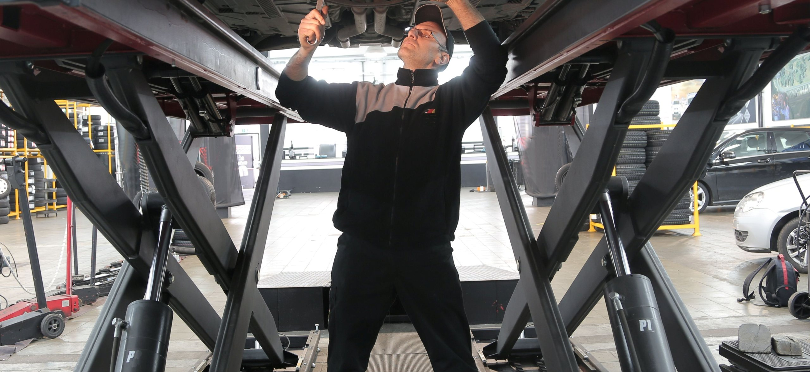
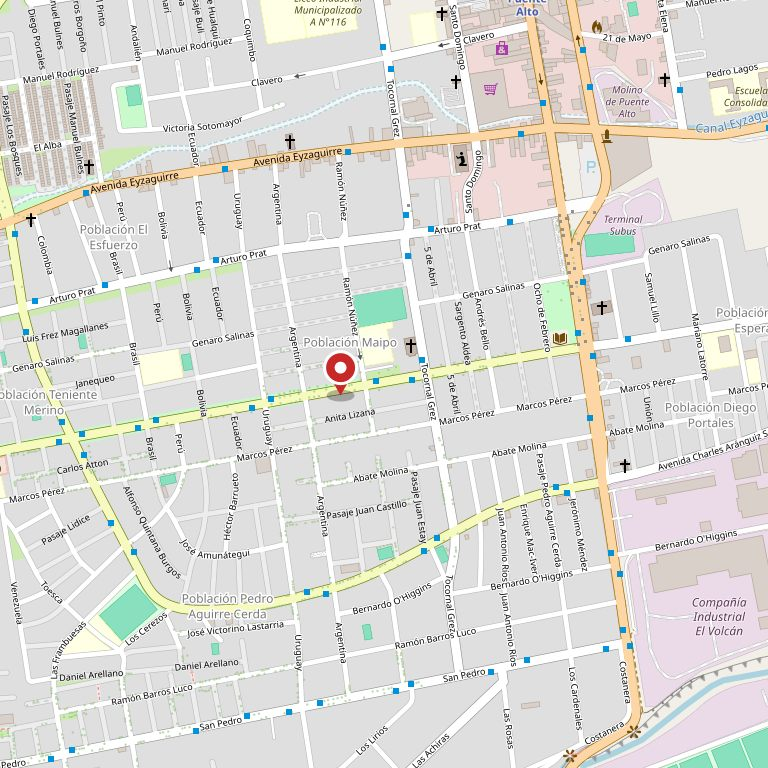

Presión de aceite
Qué significa. No es «queda poco aceite»: es que el aceite puede no estar llegando a donde tiene que llegar.
Detenerse apenas se pueda hacerlo seguro y apagar el motor. Después, llamar.
Puente Alto · Sargento Menadier 0342
La pregunta se hace con el auto andando y no se puede googlear manejando. Acá están los seis testigos que más aparecen, qué significa cada uno y qué hacer ahora mismo: seguir con cuidado, detenerse o llamar.
La pregunta con el auto andando
Seis testigos, qué significan y qué hacer ahora. La regla corta: rojo es detenerse, ámbar es ir al taller pronto. Y una que no falla: si además de la luz hay un ruido nuevo, olor a quemado o humo, se detiene igual.
Qué significa. No es «queda poco aceite»: es que el aceite puede no estar llegando a donde tiene que llegar.
Detenerse apenas se pueda hacerlo seguro y apagar el motor. Después, llamar.
Qué significa. El motor está más caliente de lo que debe estar.
Detenerse y no abrir el radiador: el agua sale hirviendo. Llamar.
Qué significa. El auto está andando con lo que queda guardado: el sistema de carga no está cargando.
Apagar lo que no se necesite —aire, radio, calefacción— y llegar al taller sin apagar el motor: puede no partir de nuevo.
Qué significa. Puede ser algo tan simple como el freno de mano a medio bajar, o algo que no es simple.
Revisar que el freno de mano esté abajo del todo. Si la luz sigue encendida, detenerse.
Qué significa. El computador del auto detectó algo que no cuadra. Puede ser grande o puede ser un sensor.
Si el auto anda normal, seguir con cuidado hasta el taller. Si pierde fuerza, tironea o la luz parpadea, detenerse.
Qué significa. El antibloqueo está fuera de servicio. Los frenos siguen funcionando: lo que se pierde es la ayuda al frenar fuerte.
Seguir con cuidado, frenando antes y con más distancia. Al taller pronto, no en un mes.
Acá no hay instrucciones para arreglarlo, a propósito. Levantar el capó y tocar no es gratis: un radiador caliente quema y un ventilador puede partir solo aunque el motor esté apagado. Esta página sirve para decidir si se sigue o se para, y para llegar sabiendo qué decir por teléfono. Lo que sí se puede hacer es traer el auto.
Cuente por teléfono qué luz se prendió y qué estaba haciendo el auto.
Llamar · (2) 2759 7470
Lo de todos los días
Esto va marcado porque todavía no está confirmado: es lo que suele hacer un taller de mecánica general de este tamaño. La lista de verdad la dictan ellos en cinco minutos, y ésa es exactamente la conversación que hoy no tienen dónde tener.
Sin marcas de autos a propósito: hasta no confirmar con qué trabajan, poner una marca es prometer algo que no sabemos.
Quién lo atiende
Un taller se elige por confianza y la confianza tiene nombre. Hoy las reseñas hablan del trato, pero no hay una página donde esté quién atiende, cuántos años lleva y con qué se trabaja.
Nombre · en qué se especializa · desde cuándo
Nombre · en qué se especializa · desde cuándo
Cuántos puestos y qué equipos hay
No inventamos nombres ni ponemos retratos de banco de fotos: los huecos quedan marcados para que se vea qué falta.
«El que busca taller a las ocho de la mañana
no compara precios: compara si le explican.»
La dirección
La dirección viene de directorios de terceros, no de una página suya. Es el primer dato que hay que confirmar antes de publicar, junto con el horario.
Estas fotos son de bancos de uso libre y no son de El Zapato. Están para que se vea de qué habla la página. Las de verdad están adentro del taller.
Contacto
Dirección
Sargento Menadier 0342
Puente Alto
Horario
___ a ___
Redes
Sin Instagram ni Facebook
Se buscó el 11-09-2026 y no apareció ninguna cuenta suya.

Para el dueño del taller
Una ficha de Google con 365 reseñas y 4,7. Es mucho, y está bien ganado. El problema es que ahí se termina: no hay un lugar donde decir qué hacen, con qué trabajan, a qué hora abren ni qué conviene traer.
Se buscaron dominios con su nombre el 11-09-2026 y no apareció ninguno, ni una cuenta de Instagram o Facebook. En internet, el taller de referencia de la comuna existe sólo como un pin en un mapa.
Una página propia que conteste lo que la gente pregunta antes de llamar. Esta demo muestra una de esas respuestas —qué significa cada luz del tablero— y no es un adorno: es la consulta más repetida de cualquier taller, y la que hoy se contesta cinco veces al día por teléfono.
Además, es contenido que ya está en la cabeza del mecánico. No hay que producir nada: hay que escribirlo una vez.
Demo hecha por CristalWeb · La dirección viene de directorios de terceros y está por confirmar. Lo marcado con línea de puntos son huecos a completar, no datos inventados. Sin precios, sin marcas de autos y sin instrucciones para reparar: eso lo pone el taller.